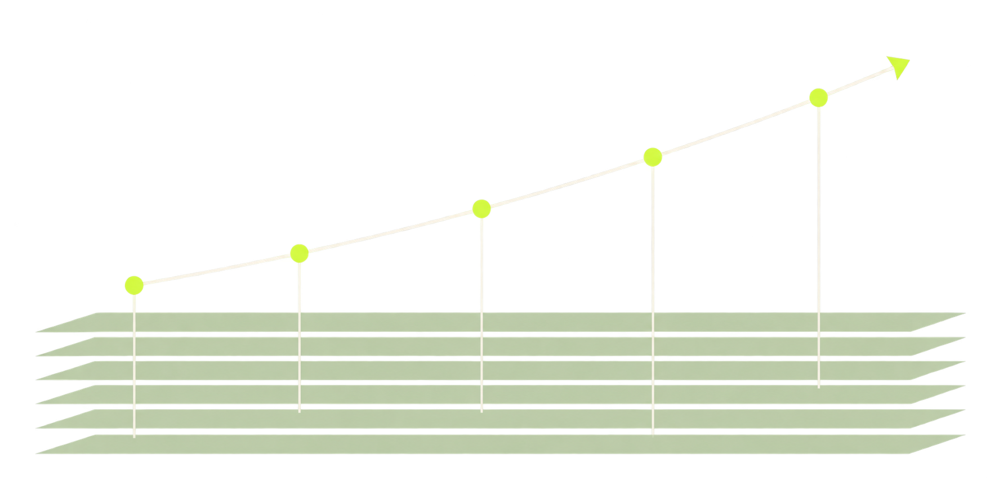

AI adoption is a human journey.
HAIMM helps teams see how their work with AI is developing, where practice is uneven, and what to examine next.

Two lenses. One evolving practice.
Dimensions show where to look. Stages show how practice develops over time.
Practice develops in stages.
Read from left to right. A team can revisit any stage as its people, needs, and tools change.
Read the grid across.
Select any cell to see what that dimension looks like at that stage, and what evidence to examine next.
Dimensions move independently. The shape of the profile is the diagnosis.
Teams revisit earlier stages as tools, people, and needs change. Choose a stage heading to learn more.
Find your team’s profile.
Answer six questions about one team and one real workflow. You will get a diagnosis and a practical next step for each dimension.
This is a self-reported starting point, not a verified gate assessment. HAIMM v0.4.0 has not yet been field-tested. How this works
A few useful answers.
HAIMM is an open model for a better conversation about AI adoption, grounded in work, people, and shared understanding.
Read the open-source frameworkWhat does HAIMM measure?
HAIMM describes how a team works with AI across Solution Fit, Workflow, Knowledge & Context, Human-AI Collaboration, People, and Ethics. It complements technical and enterprise AI maturity models.
How does the quick assessment work?
Each answer maps directly to one of the five stage descriptions for that dimension. “I’m not sure” leaves it unplaced. We show those six independent selections without averaging them or capping one based on another.
The questions and short labels are an educational adaptation of v0.4.0. They do not test the full gate criteria.
How do we verify our profile?
Inspect the team’s artifacts, observe real work, and speak with people in different roles. Work upward from Exploration, stopping at the first gate that fails.
Read the assessment playbookWhat should we do with the results?
Choose one gate by its consequences for your team. Use the evidence criteria to turn the gap into a specific task, then reassess after a meaningful work cycle.
Read the action playbookHow established is the model?
v0.4.0 is a complete specification with 24 gates and 96 criteria, but no field data yet. Its theory anchors are sourced; the model and its profile interpretations remain unvalidated.
Read the model’s references